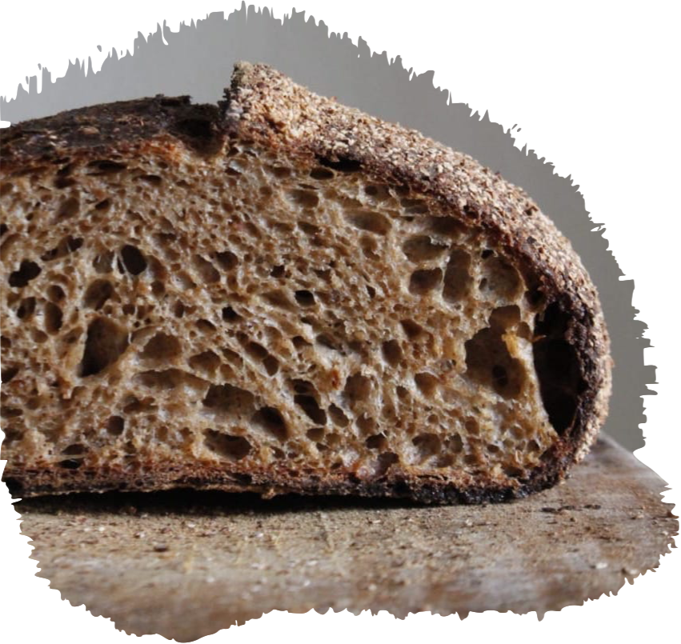

Un pan pensado para comer cualquier día de la semana. Ideal para acompañar picadas, con un buen trago de cerveza fría y amigos. Este pan está basado en un blend de harinas orgánicas con un 80% de harina blanca y un 20% de harina integral. Sumado a esto, las semillas de sésamo al tostarse en el horno generan una combinación especial, logrando un pan versátil para consumir en cualquier momento del día.


Nutritivo y aromático. El campo malteado es un pan que se logra a partir de germinar, tostar y moler correctamente granos de trigo seleccionados que luego viajarán en la masa para lograr un sabor único y profundo. Ideal para desayunos o para comerlo solo, escuchando un disco de Radiohead.
Este pan es lo más parecido a una banda de rock, en donde cada integrante, en este caso las semillas, aportan sabores y texturas, que logran el sabor característico del Semilludo. Girasol, amaranto, avena, chía, lino y sésamo, todos vibrando en un mismo pan.